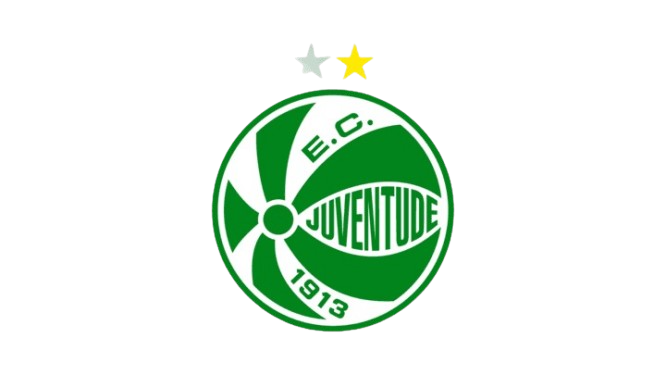

Esporte Clube Juventude
O Esporte Clube Juventude é um time gaúcho, da cidade de Caxias do Sul, formado em 1913 por trinta e cinco jovens amantes do futebol. Desde o início, escolheram o verde e o branco como cores representativas do clube, que permanecem até hoje. Em 1919, o time conseguiu seu campo próprio, conhecido como “Quinta dos Pinheiros”.
Aos poucos, o time começou a se firmar e, em 1926, o Juventude já havia conquistado sete títulos municipais, o que aumentou sua representatividade. Em 1954, o clube foi convidado a integrar a série elitista do futebol gaúcho, o que levou à reforma de seu estádio, que, em homenagem a um ex-ídolo, passou a se chamar “Estádio Alfredo Jaconi”.
Sobre o Clube e a Torcida
O uniforme oficial do clube é camisa listrada verticalmente em branco e verde e short branco com detalhes em verde. O uniforme reserva é composto de camisa listrada horizontalmente em branco e verde e short verde.
A torcida organizada do Esporte Clube Juventude é a “Papada”. O nome surgiu de uma ironia de torcidas adversárias, que diziam que o Juventude tinha muito “papo” e pouco futebol. Contrariando a intenção, a torcida do Juventude adotou o nome como sua identificação.
Títulos do Juventude
- Reconhecimento Estadual: Segundo lugar no Campeonato Gaúcho em 1965;
- Campeonato Brasileiro Série B: 1994;
- Vice-campeão Gaúcho: 1996;
- Campeão Gaúcho Invictivo: 1998;
- Copa do Brasil: 1999;
- Participação na Copa Libertadores da América: 2000.